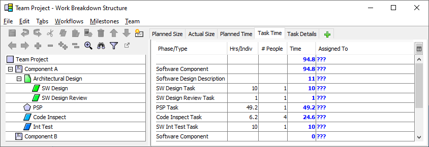
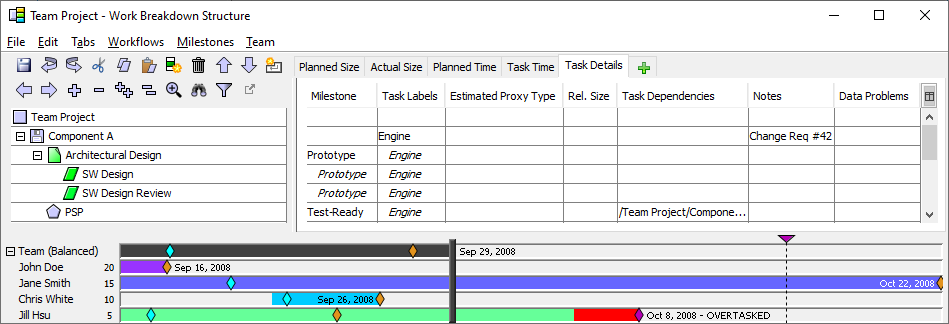

Different teams use different planning styles during their project launch. For example, some teams begin by creating an unbalanced top-down plan for the project. After this plan is segregated into individual plans, a second effort is initiated to reassign work so the individual plans will be balanced.
In contrast, the team support for the Process Dashboard makes it possible to perform these two tasks simultaneously. As a result, you may wish to consider merging TSP launch meeting No. 4 and meeting No. 6 into a single launch meeting.
The first step in creating a team plan is to refine the high-level components listed in the earlier team strategy meeting. This may involve hierarchically subdividing plan components targeted for the upcoming project phase or cycle. If you did not previously have any documents in your work breakdown structure, you may find that you wish to add some at this point.
For work to be performed on legacy components, it is sometimes helpful to use the Size Accounting tab. This tab will allow you to enter the Base size of a legacy item, as well as estimates of the sizes of Deleted, Modified, Added, and Reused components. In keeping with PSP guidance, the New and Changed size (N&C) is the size that matters for cost planning purposes, so the value in that column is the size metric that will be displayed on other tabs.
Using the Size Accounting tab is completely optional; use it only if you find it helpful for the planning of a particular item. Many teams find size accounting an unnecessary distraction during a high-level team planning session like a project launch; size metrics can be entered directly on the Size tab instead.
Once the components are refined to the team's satisfaction, the team is ready to plan the tasks involved in performing the work. The simplest way to accomplish this is to apply the common processes/workflows defined earlier. Simply select one or more WBS items, then select an appropriate process/workflow from the Workflow menu. The contents of the given workflow will be inserted as children underneath each selected WBS item. For more information, see the inserting workflows help topic.
When creating tasks, you have the option of using PSP Tasks. PSP Task items are automatically translated into PSP2.1 projects in an individual's dashboard hierarchy. As a result, you do not need to explicitly add the PSP2.1 phases (Design, Design Review, Code, Code Review, Compile, Test) in places where you have added a PSP Task.
Of course, the PSP Task focuses on the "personal" portion of the development lifecycle, so it does not automatically include Design Inspection and Code Inspection tasks. Those tasks should be entered as separate rows that immediately follow the PSP Task. If you follow this pattern, the inspection tasks will automatically be inserted into the correct order between the phases of the PSP Task in the individual's "Flat View" task list.
Generally, tasks should be subdivided until they are 10 hours or less. PSP Task elements, however, will be automatically subdivided into phases when they are copied into an individual's schedule. Thus, it is acceptable for PSP Tasks to be larger than 10 hours.
If your WBS items included sizes and your process/workflow definitions included productivity rates, these numbers will be used to calculate preliminary time estimates for the tasks inserted via the process/workflow. You need not accept these preliminary estimates. Instead, examine each task as a team and decide whether the estimate seems reasonable, editing values as necessary. These times are most easily viewed and edited on the Task Time tab.

If your workflow definitions included percentages but did not include rates, your team should use engineering judgement to produce your best estimate of the time needed for a WBS item, and enter this estimate on the Task Time tab. The WBS will spread your time estimate across the tasks in the workflow according to the percentages you entered in the Workflow editor.
These workflow tools make it very easy to create a large number of tasks quickly. Unfortunately, if teams aren't paying attention, they can sometimes accidentally divide the work into tasks that are too small. If you have many tasks in your plan that are measured in minutes rather than hours, you may be falling into this trap. When personal plans contain a large number of small tasks, this can dramatically increase the amount of effort individuals must devote to daily metrics collection activities, which can foster an inaccurate perception that TSP requires "too much overhead." This perception can jeopardize your organization's chances for successful adoption of the TSP, so coaches should watch for this planning antipattern and advise teams to adjust their planning style.
For more information on editing values in the table on the right-hand side of the screen, see the Editing Metrics in the Work Breakdown Structure Editor help topic.
As you plan the work for the items in your WBS, it is helpful to assign tasks to individuals as you go. This way, the assigned individual can be allowed to provide their input into the time estimate. To assign tasks to individuals, simply enter team members' initials in the Assigned To column of the Task Time tab.

To save time, you can enter assignments and time estimates all at once in the Assigned To column. Just enter a person's initials, followed by the time estimate (in hours). As an example, the Int Test task above could be assigned to team member jh and estimated at 10 hours just by entering jh 10 in the Assigned To column.
This technique can also be used when several people are assigned to a task, but they do not all plan to spend the same amount of time. (This scenario is common for inspections - the author of a product typically participates in the inspection, but due to their different role, they will often spend more or less time than the other participants.) Just enter the time estimate after the appropriate person's initials. For example, if you wanted to indicate that the individual jas would only be spending two hours in the Code Inspection above, you could edit the Assigned To field to read jjd, jas(2), crw, jh.
If you find yourself moving back and forth between the various tabs of metrics, consider creating a custom tab to collect the metrics columns to need. The items on the Tabs menu make this possible.
When creating a team project plan, it is important to ensure that the plan is balanced. In a balanced plan, each team member has been assigned an equitable portion of the total work, and all team members are projected to finish at approximately the same time. A balanced plan helps to maximize team efficiency and productivity.
The Work Breakdown Structure Editor provides a useful feedback mechanism that helps you to balance your project plan. From the Team menu, select the Show Bottom Up Time Panel option.

The Bottom Up Time Panel displays a colored bar for each team member. The horizontal bars indicate the start date and relative length of each team member's personal schedule. Each bar also shows the planned end date for each team member. If an individual is scheduled to leave the project before their planned completion date, a red area at the end of their bar will indicate that they are overtasked.
In addition, a vertical black bar shows the balanced team completion date. This is the calculated date that the project would complete if the work is balanced optimally. This date is also displayed on the horizontal black bar that represents the entire team. It is easy to balance the schedule visually, since any team member whose bar extends to the right of the vertical black line is over-tasked, and any team member whose bar falls short of the vertical black line is under-tasked. For example, in the image above, Jane Smith has been assigned more work than any other team member.
To resolve imbalances, reassign work from an over-tasked individual to an under-tasked one. You can reassign all of the tasks for a particular component by editing the "Assigned To" column at the component level. Just click on a set of initials and type a new value, and all of the subtasks will be transferred to the new person. For example, in the image above, you could edit the Assigned To value on the "Component A" row, replacing jas with jjd and vice versa, to have John Doe and Jane Smith swap task assignments.
During team planning, there will be times that you will prefer not to see the Bottom Up Time Panel. You can alternately show and hide this panel by selecting the Show Bottom Up Time Panel option from the Team menu. Or if you only need to see the balanced team duration, you can click the icon to the left of the "Team (Balanced)" label to collapse the team member bars.
On the Task Details tab, you can enter additional information about the tasks in your plan.

Milestones: If you have entered milestones for the project, you can use this column to associate project components and tasks with particular milestones. Once you do this, color-coded diamonds will appear on the Bottom Up Time Panel to indicate when each team member will complete their work for a given milestone, and when the team as a whole could complete each milestone if the work was perfectly balanced:

If you have entered a commit date for a particular milestone, that date will be displayed as a vertical dotted line. By comparing the colored diamonds to this vertical line, you can determine whether team members are overcommitted for a particular milestone. If so, you may need to reassign work so that each team member can finish their tasks before the commit date.
When balancing milestone work, you may prefer to see a stronger visual indicator than the colored diamonds. Select the "Use Milestone Colors" option on the Milestones menu, and the bar segments will be recolored based on the milestone they belong to (rather than the individual).
You can also highlight the work associated with a particular milestone by holding your mouse over a colored bar for a second or two. The milestone in question will be highlighted with animated diagonal stripes. If you move the mouse around, it will dynamically highlight other milestones. You can lock the stripes to a particular milestone by clicking on a bar segment; then unlock by clicking on the background behind the colored bars.
If your team has a large number of internal milestones (for example, for items such as "Code Complete" or "Deliver to Test"), the large number of diamonds may make the balancing bars difficult to read. In that case, you can optionally hide the diamonds for certain milestones by opening the Milestones window and checking the box in the "Hide" column as desired.
If a particular milestone is critical, you may wish to balance the workload through that milestone. Click the Milestones menu and choose to balance work through the milestone in question. The Bottom Up Time Panel will recalculate, and only display tasks up through and including the selected milestone. Each colored bar will indicate when the team member will complete the tasks through that milestone, and the vertical black bar will show the optimal team completion date for that milestone.
Task Labels: The Task Labels column allows you to associate keywords with the various tasks in your WBS. If you enter keywords in this column, the team project plan summary will allow you to filter project metrics rollups, to include only the tasks matching a given search expression. For more information on this filtering capability, see the Analyzing Filtered Data Using Labels help topic.
Task Dependencies: The Task Dependencies column allows you to define dependencies between tasks. You can declare dependencies on other tasks within your own project, or on tasks in other projects that belong to the same master project. Just double-click on a cell in this column to enter a list of dependencies for a particular task.
Task dependencies in the dashboard are used to coordinate work between individuals, but are not used to calculate critical path, and do not affect the scheduling of project tasks. These capabilities may be added in the future. But at the current time, task dependencies are simply a way of showing individuals the information they need in order to coordinate with their teammates more effectively. For more information on task dependencies, please see the Task Dependencies help topic.
Notes: As you create a plan and enter estimates, it is sometimes helpful to capture contextual information about a task. For example, you may want to capture the high-level scope for a particular work item, the assumptions used to generate the estimates, the ticket number in your issue tracking system, etc. Just double-click on the Notes column to enter comments about any component or task.
The resulting notes will appear as tooltips over the WBS hierarchy on the left-hand-side of the window. In addition, the notes will be copied into the personal plans of each team member for future reference.
As you work, save the work breakdown structure periodically by selecting the Save option from the File menu.